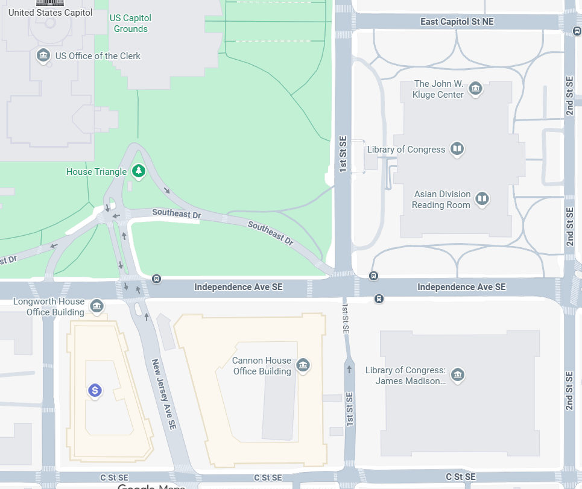

It took 12 hours to plan out the details of this itinerary, so that’s how much time you are saving yourself if you decide to read this itinerary and follow it.
This itinerary is intended to be executed Friday, Saturday, and Sunday - with Saturday being the full-day in D.C.
Friday: Drive to NOVA + visit Old Town Alexandria
Saturday: Full-day in D.C.
Sunday: Drive home, potentially visit Mt. Vernon (if you are traveling south back home)
Time Frame: 5:30 AM - 11:20 PM
This trip requires using the metro quite extensively. If you've never used a metro before and need a tutorial, read How to Use the Metro in D.C. and/or watch this YouTube video (not my video).
Detailed Itinerary
Schedule
Day 1 (Friday):
-
3:30 PMArrive in Old Town Alexandria121 N Fairfax St, Alexandria, VA 22314Note: The address given is for Carlyle House Historic Park, which is in Old Town. Drive there and find parking.https://visitalexandria.com/old-town/$50 budgeted in for gas
-
3:30 PM - 4:00 PMFind parkingNote: It hopefully won't take 30 min to find parking, but I hate feeling rushed, so there is plenty of time. You will have to pay to park. If it isn't a special event, parking should be plentiful. If it's a special event, I'd look into reserving a spot (I haven't researched that much). Parking will be on the street or you can research a garage (will be more expensive).$15 budgeted in for parking
-
7:00 PM - 7:40 PMDrive to the hotelBook it.Courtyard by Marriott Dunn Loring Fairfax2722 Gallows Rd, Vienna, VA 22180+1 703-573-9555Check-in: 4:00 PM (Friday) - Minimum Age to Check In 21Check-out: 12:00 PM (Sunday)$100/night x 2 nights = $200 + $12 (6% sales tax) + $100 (security deposit - will be refunded) = $312On-Site Parking: $10/day x 2 days = $20$312 + $20 = $332 (round up to $350)https://www.marriott.com/en-us/hotels/iadcy-courtyard-dunn-loring-fairfax/overview/?scid=f2ae0541-1279-4f24-b197-a979c79310b0~$350 est.
-
8:10 PM - 8:30 PMGet your breakfast items from Harris Teeter (20 min)2675 Avenir Pl, Vienna, VA 22180 - It’s literally right beside the hotel under The Point at Dunn LoringThe reason you need to get your own breakfast is because you will be leaving the hotel to go to D.C. before breakfast is served. The Dunn Loring-Merrifield Metro station opens at 6:00 AM on Saturday. The first trains on the Orange Line depart at 6:04 AM for New Carrollton, which is the metro you will take into DC.Recommended Items: Canned peaches or mandarin oranges (carb); Breakfast bars (look for high-protein)You CAN'T take eat on the D.C. metro (according to Google), so get something you can eat quickly in the morning...$30 budgeted in
-
8:50 PM - 9:50 PMPrepare for tomorrowEither download the metro app (SmarTrip App) OR walk to the Dunn Loring Metro Station (15 min walk) and buy a metro card and put funds on it so you don’t have to do that in the AM. You need to catch the very first metro to DC so you don’t have time to add money to the card tomorrow morning, especially if you’ve never done it before - GO TONIGHTMake sure you go over your itinerary for tomorrow and know how to use the metroIf the hotel has a printer, I’d print the metro map out and this itinerary out if you haven’t yet…Go through security and review the U.S. Capitol’s + other places prohibited items list before your visit.Metro Information: You will buy a metro card at the metro station and add funds or download the app and add funds; you will use the app or card to get down into the metro system; you will ride the metro and go to the appropriate stations; you will scan the card to exit the station, at which point you will be charged (i.e. funds will be deducted from your card/app). You cannot eat or drink on the DC Metro, as it is against the rules to eat, drink, smoke, or litter on Metro vehicles or in stations. Violating this rule can result in citations or arrest by the Metro Transit Police. The purpose of the rule is to keep the vehicles and stations clean and free of pests, which helps maintain a pest-free system.On the metro trains, you will see the color flash on the front, along with the name of a town/city come across the front of the train. If you look on the metro map, the town/city corresponds with the last/first station on each line (i.e. Orange Line goes from Vienna (western-most stop) to New Carrollton (eastern-most stop). If Vienna is flashing on the metro train, the train is going towards Vienna, vice-versa)U.S. Capitol Know Before You Go LOC Know Before You Go Metro Rules Metro Map
Day 1: $525 est. expenses
Day 2 (Saturday):
-
5:45 AM - 5:55 AMWalk to the Dunn Loring-Merrifield Metro Station. The station opens 10 minutes before the first train, so 5:50 AM on weekends and 4:50 AM M-F.Walk on the sidewalk parallel to Gallows Rd - go towards The Point at Dunn Loring / Harris Teeter - the metro station is right beside the sidewalk in/next to Avenir Pl.Prepare to get on the very first Orange line train towards New Carrollton (should be the Orange Line train on the right side when you walk down the stairs). It should run at 6:00-6:04 AM.0.4 miles - 10 min
-
6:05 AM - 7:05 AMMetro to Capitol SouthRide the Orange Line metro to Capitol South Metro Station (1 hr - 10 min wait + 50 min trip)Get off at Capitol South metro station (the 16th stop)Metro Info: You are charged when you exit the metro (second time you scan your card when you leave the underground). You scan to get in the station and to get out.Metro Map30 min - 0.8 miles from Capitol South Metro Station$10 budgeted in
-
7:05 AM - 7:30 AMWalk to Ulysses S. Grant MemorialWalk to the Ulysses S. Grant MemorialGet off at Capitol South metro station (the 16th stop)Metro Info: You are charged when you exit the metro (second time you scan your card when you leave the underground). You scan to get in the station and to get out.
-
7:30 AM - 8:00 AMUlysses S. Grant MemorialEnjoy the view of the Capitol Building from the Ulysses S. Grant Memorial and take photos (30 minutes)Sitting between the Capitol Building and the Capitol Building Reflecting Pool is this memorial commemorating Grant, the 18th U.S. President who commanded the Union Army to victory during the Civil War. Get a great photo of the Capitol building across the reflecting pool w/ a DSLR.
-
8:00 AM - 8:30 AMWalk to the U.S. CapitolWalk to the U.S. Capitol Building Visitor Center for your guided tour1st St SE, Washington, DC 20515The Capitol Visitor Center is located on the east side of the U.S. Capitol building, underneath the East Front plaza. It is the main entrance for visitors and serves as the starting point for tours of the Capitol. Leave time to go through security and review the U.S. Capitol’s prohibited items list before your visit.(30 min walk - 0.7 miles from Ulysses S. Grant Memorial)
-
8:30 AMArrive to the U.S. Capitol Building Visitor Center for Your TourWalk to the U.S. Capitol Building Visitor Center for your guided tourHours: Monday–Saturday, 8:30 AM–4:30 PM - Tours: Available Monday–Saturday, 9:00 AM–3:20 PM - The Capitol Complex is closed on Sundays, Thanksgiving Day, Christmas Day, New Year's Day, and Inauguration Day.The Capitol Visitor Center is located on the east side of the U.S. Capitol building, underneath the East Front plaza. It is the main entrance for visitors and serves as the starting point for tours of the Capitol. Leave time to go through security and review the U.S. Capitol’s prohibited items list before your visit.Get to the Capitol Building right when it opens and be ready to go through security and do what you need to before the tour. You don’t want to feel rushed, so give yourself as much time as possible. It is free to get into the U.S. Capitol building, but a free timed-entry pass is required and can be booked online in advance through the U.S. Capitol Visitor Center website or through a congressional office.Book itBook U.S. Capitol Tour$2 budgeted in to book tour
-
8:30 AM - 9:00 AMPrepare for Your TourPrepare for your tour. Go through security and review the U.S. Capitol’s prohibited items list before your visit.U.S. Capitol Know Before You Go
-
9:00 AM - 10:30 AMU.S. Capitol TourTour the U.S. Capitol Building (free)(1.5 hrs)A guided tour of the U.S. Capitol is about 1 hour long and starts with a 13-minute orientation film - this itinerary added a 30-minute buffer. Reddit users confirm that the tour is approximately one hour and can be well worth the time. The tour typically includes the Rotunda, Crypt, and National Statuary Hall.Statue of Freedom: The statue crowning the Capitol dome is the Statue of Freedom, a 19.5-foot-tall bronze figure of a classical goddess.Crypt: The crypt in the U.S. Capitol is a large, circular, vaulted space directly beneath the Rotunda. Originally designed as a tomb for George Washington, it now serves as a historical museum and contains statues from the original 13 colonies, a Magna Carta replica, and a compass star marking the center of the city.Rotunda: The capitol rotunda is a large, domed, and circular room located in the center of the U.S. Capitol building, serving as its symbolic heart. It is used for important ceremonial events, such as presidential inaugurations, presidential funerals, and the lying in state of prominent citizens, and features prominent artworks like the Apotheosis of Washington fresco on the ceiling.National Statuary Hall: The National Statuary Hall is a collection of 100 statues located in the U.S. Capitol Building, with each of the 50 states contributing two statues of notable deceased citizens for display. The statues honor individuals distinguished for their historic renown, civic service, or military service. The collection is displayed throughout the Capitol, with the historical Statuary Hall room itself being one of the most popular locations for tourists and ceremonial occasions.U.S. Capitol Know Before You Go
-
10:30 AM - 10:40 AMWalk to the U.S. Supreme CourtWalk to the U.S. Supreme Court(5 min walk + 5 min buffer - 10 min total - 0.2 miles from the Capitol Building)
-
10:40 AM - 11:00 AMU.S. Supreme CourtEnjoy the outside of the U.S. Supreme Court and take photosThe Supreme Court is closed on the weekends, so if you follow the week days of this itinerary (i.e. go to DC on Saturday) you can’t go inside.The U.S. The Supreme Court is open to the public on weekdays from 9 a.m. to 3 p.m.. Visitors can walk through public areas, view exhibits, attend courtroom lectures, or, if available, watch a session of the Court. All visitors must go through a security screening. Admission is free for the public to enter, explore public areas, and attend educational programs like courtroom lectures.Supreme Court Library: If you can’t go inside, I would still look up photos of the Supreme Court Library. The Supreme Court's main reading room is paneled with hand-carved oak, a project completed by the Matthews Brothers. The building's intricate woodwork, designed to symbolize legal history and justice, is a notable feature of its neoclassical architecture.
-
11:00 AM - 11:10 AMWalk to the Library of CongressWalk to the Library of Congress **Take 1st St NE - You should come upon the Neptune Fountain at the front of the Library of Congress’ Thomas Jefferson Building. After looking at the fountain, walk up the stairs to the Thomas Jefferson Building.(5 min walk + 5 min buffer - 10 min - 0.2 miles from the U.S. Supreme Court)
-
11:10 AM - 11:30 AMPrepare for your LOC self-guided tourGo through security, check prohibited items.LOC Know Before You Go
-
11:30 AM - 12:45 PMLibrary of Congress - Self-Guided Tour(1hr 15 min)It is free to get into the Library of Congress, but you must have a free timed-entry ticket to enter. Visitors can reserve tickets online through the Library of Congress website. For groups of 21 or more, you must submit a group registration form in advance. Tickets are available 30 days in advance.Book it. Tickets are available 30 days in advance.Lib. of Congress - BookGreat Hall: The Great Hall is located on the first floor of the Library of Congress's Thomas Jefferson Building. It is a grand, two-story space that serves as a central hub, connecting to other parts of the building and featuring ornate Italian Renaissance-style decorations. The architecture of the Great Hall is incredible.Gutenberg Bible: The Gutenberg Bible is on public display in the Great Hall of the Thomas Jefferson Building at the Library of Congress. It is located in a corridor leading off the Great Hall, and a dedicated gallery also features murals depicting the evolution of the written word. The significance of the Gutenberg Bible is that it was the first major book printed in Europe using a movable metal type printing press.Main Reading Room: Located in room LJ 100 on the first floor of the Thomas Jefferson BuildingGershwin Room: The Gershwin Room is located on the first floor of the Library of Congress's Thomas Jefferson Building. To find it, go to the main entrance and turn left. Proceed down the hallway, and the Gershwin Room is the last door on the left before the double doors. The Gershwin Room is a permanent exhibition at the Library of Congress in Washington, D.C.'s Thomas Jefferson Building dedicated to the brothers George and Ira Gershwin. It features a collection of materials, including personal items, musical scores, and correspondence, offering insights into their lives and careers. The room, opened in 1998, is designed to evoke the glamour and sophistication of the 1920s and 1930s.Declaration of Independence (COPY): The original, signed Declaration of Independence is held at the National Archives, where it is on permanent display in the Rotunda for the Charters of Freedom. The Library holds various copies of the Declaration of Independence, including an early printed broadside that was sent to George Washington. An incomplete copy is part of the George Washington Papers in the Manuscript Division. A complete copy was acquired by the Library in 1867 and is held in the Rare Book and Special Collections Division.$2 budgeted in to reserve ticket
-
12:45 PM - 12:55 PMWalk to lunchWalk to the Madison Cafe in the James Madison Memorial Building (for lunch)101 Independence Ave SE, Washington, DC 20540 (south of the main Library of Congress building)The Madison Cafe is located on the 6th floor of the James Madison Memorial Building at the Library of Congress. It is open to the public and offers various food options, including sandwiches, pizza, an Asian station, a salad bar, and a Starbucks.(10 min - 0.1 mile)
-
12:55 PM - 1:25 PMGet and eat lunchEat lunch QUICK - Get something you can eat as you walk to the metro (can't eat on the metro) - dinner will be a nice sit down, but there’s too much to see to take an hour lunch…
-
1:25 PM - 1:35 PMWalk Back to Capitol South Metro StationWalk back to the Capitol South Metro Station(5 min walk + 5 min buffer from Madison Cafe - 0.2 miles)
-
1:35 PM - 1:55 PMMetro to Archives-Navy Memorial-Penn Quarter StationFrom Capitol South Station, go to L’Enfant Plaza Station by taking a Silver Line (towards Ashburn) OR an Orange Line (towards Vienna) OR a Blue Line (towards Franconia-Springfield) (it should be the 2nd stop)From L’Enfant Plaza, go to Archives-Navy Memorial-Penn Quarter Station by taking a Yellow Line (towards Mt Vernon Sq) OR a Green Line (towards Greenbelt) (should be the 1st stop)Metro Map(10 min + 10 min wait/buffer - 20 min)$10 budgeted in
-
1:55 PM - 2:05 PMWalk to National ArchivesWalk to the National Archives Museum701 Constitution Ave. NW, Washington, DC 20408(5 min walk + 5 min buffer - 10 min - 0.2 miles)
-
2:05 PM - 3:35 PMTour the National Archives Museum (1.5 hours)Magna Carta: A 1297 copy of the Magna Carta is in existence and is held by the U.S. National Archives in Washington, D.C.. It is on permanent display in the David M. Rubenstein Gallery of the National Archives Museum. "The Magna Carta & Records of Rights”: Don't miss an original of the 1297 Magna CartaOriginal Declaration of Independence, Original Constitution, and Original Bill of Rights: When you've finished viewing Records of Rights, go up to the Rotunda for the Charters of Freedom, home of America's most treasured documents–the Declaration of Independence, the Constitution, and the Bill of Rights. The original Declaration of Independence is on permanent display in the Rotunda for the Charters of Freedom at the National Archives Museum in Washington, D.C.. It is housed alongside the original U.S. Constitution and the Bill of Rights, protected under specialized, climate-controlled conditions. The most important things to see at the National Archives are the Charters of Freedom: the original Declaration of Independence, the U.S. Constitution, and the Bill of Rights, displayed in the Rotunda. You can also see other historically significant documents, like the Emancipation Proclamation and the Zimmerman Telegram, along with exhibits featuring presidential records, patent drawings, and historical photographs.Emancipation Proclamation and Zimmerman TelegramEntry to the National Archives Museum in Washington, D.C., is free, but a $1 advance reservation fee applies to timed-entry tickets. While not required, booking a ticket is recommended to avoid long lines, especially during peak seasons, and it allows for timed entry into the building. For other archives, like the UK's National Archives, entry to the exhibition is free, but there may be fees for research or record copying services.Book it. Book here.
-
3:35 PM - 3:45 PMWalk back to Archives-Navy Memorial-Penn Quarter StationWalk back to the Archives-Navy Memorial-Penn Quarter station(5 min walk - 5 min buffer - 10 min - 0.2 miles)
-
3:45 PM - 4:15 PMMetro to McPherson Square StationTake the metro to McPherson Square StationFrom Archives-Navy Memorial-Penn Quarter Station, go to L’Enfant Plaza Station by taking a Yellow Line (towards Huntington) OR a Green Line (towards Branch Av)(should be the 1st stop)From L’Enfant Plaza, go to McPherson Sq Station by taking a Silver Line (towards Ashburn); Blue Line (towards Franconia-Springfield); or Orange Line (towards Vienna) (should be 4th stop)Metro Map(20 min + 10 min wait/buffer - 30 min)$10 budgeted in
-
4:15 PM - 4:25 PMWalk to Lafayette SquareGo WEST on I St NW Turn LEFT on Vermont Ave NW Turn RIGHT on H St NW (go WEST) Walk into Lafayette Square(5 min + 5 min buffer - 10 min - 0.2 miles)
-
4:25 PM - 4:45 PMTour Lafayette Square (20 min)General Andrew Jackson Statue General Marquis de Lafayette Statue
-
4:45 PM - 4:55 PMWalk to White House(5 min + 5 min buffer - 10 min - 0.1 miles)
-
4:55 PM - 5:15 PMWhite HouseFor this specific itinerary it will be too late in the day to do a tour, but here is some information in case you want to make arrangements… You can go inside the White House by requesting a public tour, but you must do so well in advance through your Member of Congress or, if you are a foreign national, through your country's embassy in Washington, D.C.. The tours are free, but they are scheduled on a first-come, first-served basis and are subject to last-minute cancellation due to security or other concerns. How to request a tour For U.S. citizens: Contact your Member of Congress to submit a tour request. For foreign nationals: Contact your country's embassy in Washington, D.C. Timing: Submit your request at least 21 days in advance, but no more than three months ahead of time. Confirmation: You will receive tour updates via email, so be sure to provide your email address when you book. What to expect: Tours are generally available Tuesday through Saturday and include rooms like the East Room, Blue Room, Red Room, and Green Room.
-
5:15 PM - 5:30 PMWalk to dinner600 14th St NW, Washington, DC 20005Walk to The Hamilton for dinner.From Pennsylvania Ave NW right in front of the White House, go east (towards Albert Gallatin statue) t to 15th St NW Turn RIGHT on 15th St NW Turn LEFT on F St NW It’s at the end of the sidewalk (east side)(10 min walk + 5 min buffer - 15 min - 0.3 miles)
-
5:30 PM - 6:30 PMEat DinnerEat dinner @ The HamiltonMake a reservation for 5:30 PM on the Saturday you will be there
-
6:30 PM - 6:35 PMWait for taxiMake a reservation for 6:35 PM on the Saturday you will be there
-
6:35 PM - 6:45 PMTake Taxi to D.C. Night-Tour Pick-Up LocationTaxi ride to 1200 Independence Ave SW, Washington, DC 20004 for Night-Tour0.9 miles$40 budgeted in
-
6:45 PM - 7:00 PMWait for Night-Tour
-
10:00 PM - 10:10 PMWalk to Smithsonian Metro Station
-
10:10 PM - 11:10 PMMetro to Dunn-Loring-Merrifield StationTake the metro to Dunn-Loring-Merrifield Station to go back to the hotelAt the Smithsonian Station, board an Orange Line (towards Vienna) and go all the way to Dunn-Loring-Merrifield Station (it should be the 13th stop)(1 hr - 10 min wait + 50 min trip)$10 budgeted in ($10 each person)
-
11:10 PM - 11:20 PMWalk to hotelWalk back to the hotel0.2 miles
Overview
Destination:
This itinerary includes the following activities:
Budget:
Travelers:
Traveling from:
Week days: